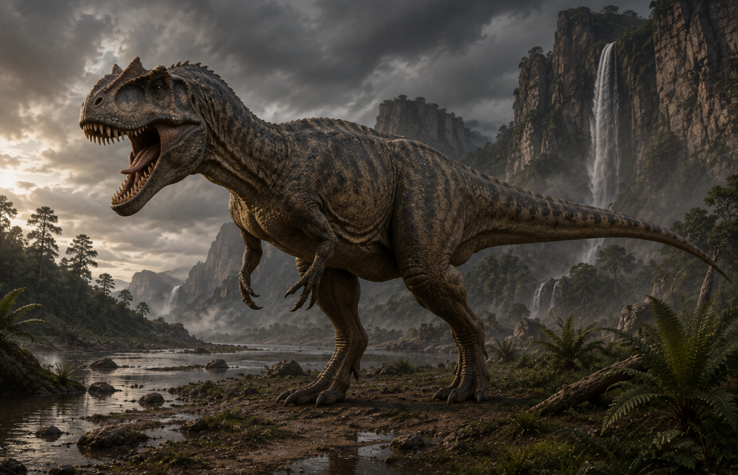

O Ágil Predador do Jurássico
ALOSSAURO
Allosaurus fragilis
Comprimento
8,5 a 9,7 m
Massa Corporal
~2 Toneladas
Velocidade
Até 40 km/h
Abertura Bucal
Até 79º
Caçador Ágil: O Alossauro foi o predador dominante da América do Norte no Período Jurássico. Ele abria a mandíbula em ângulos amplos para golpear presas como um machado, usando dentes serrados e garras afiadas para caçar.